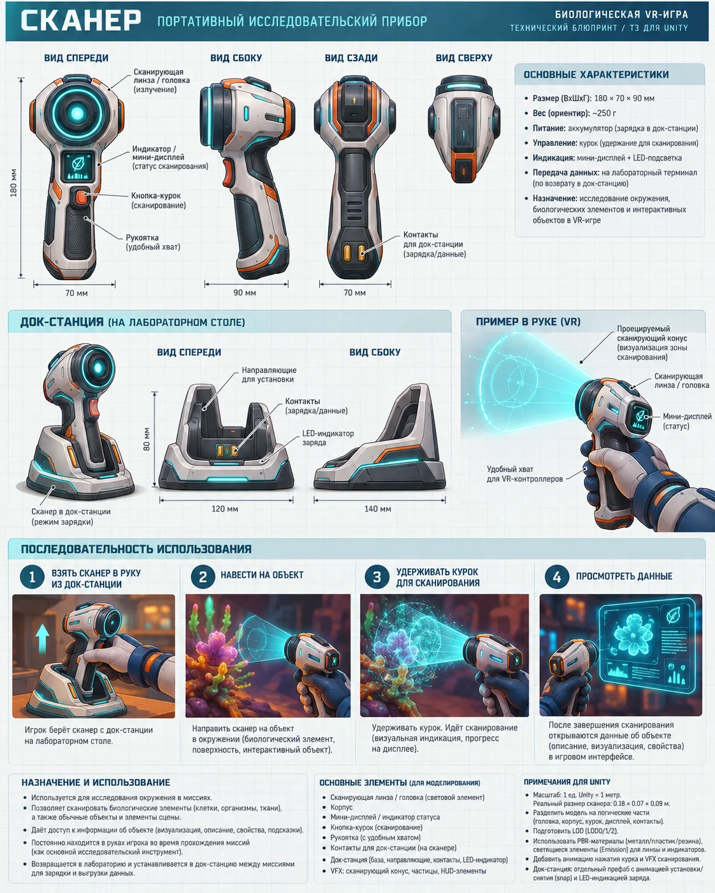

Инструмент · preset
Ручной сканер
Распознавание и исследование объектов.

Роль в проекте
Используется в: 01 — Лаборатория, 03 — Артерия — знакомство с кровью, 04 — Строение артерии, 06 — Атеросклеротическая бляшка, 07 — Газовый эмбол, 08 — Первая встреча с вирусом, 11 — Повреждение стенки сосуда, 15 — Финальный вирусный очаг, 16 — Восстановление гомеостаза, 18 — Финальный отчёт
Рекомендации для Unity
- XR Grab Interactable
- Socket/Dock для возврата инструмента
- State Machine режимов и VFX-индикация
- Haptic feedback на подтверждённые действия